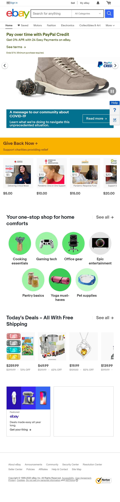
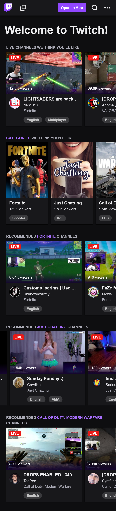

White Space
Ebay
This website did a great job with white space: the main items being sold are put in the middle of white backgroun so that the audience focuses on the offers, suggestions and special sales they could have going on. This also leaves space for adds or announcements they might have. Simple and efficient
Alignment
TwitchTv
This is a clear example of Left and Right Horizontal alignment. Their sorting is pretty straight forward, horizontal rows that follow the same size items advertising different streamers. Even with the full browser version, TwitchTv preserves a well lined up design, making it easy to navegate for the user
Contrast
Pandora
The pandora website mostly uses simple and monotone tones throught its website, these characteristics allow the company to highlight images throught abrupt color and background changes (their focus being music album covers or the promotion of features and sales they have on their product). These use of colors makes the text easier to read, thus transmiting the information to the user smoothly.